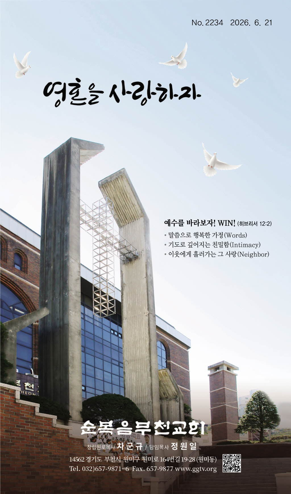

| 구분 | 시간 | 장소 |
|---|---|---|
| 주일 1·2·3·4부 예배 | 주일 오전 7시·9시·11시, 오후 1시 | 대성전 |
| 새가족 예배 | 주일 오전 9시·11시 | 새가족실 |
| 수요 예배 | 수요일 오후 8시 | 대성전 |
| 수요 오전 기도회 | 수요일 오전 11시 | 예루살렘성전 |
| 금요 저녁 기도회 | 금요일 오후 8시 | 대성전 |
| 새벽 기도회 | 매일 오전 5시 30분 | 예루살렘성전 |
| 저녁 기도회 | 매일 오후 8시 (토·주일 오후 7시) | 예루살렘성전 |
| 사무엘 영유아부(0~4) | 주일 오전 11시 | 사무엘성전 |
| 요셉 유치부(5~7) | 주일 오전 11시 | 갈릴리성전 |
| 다니엘 유소년부(1~6학년) | 주일 오전 11시 | 실로암성전 |
| 다윗 청소년부 | 주일 오전 11시 | 예루살렘성전 |
| 여호수아유드 청년1부 | 주일 오후 1시 | 예루살렘성전 |
| 마노아 청년2부 | 주일 오후 1시 | 예루살렘성전 |
| 예수 사랑부 | 주일 오전 11시, 오후 1시 | 베들레헴성전 |
| 경배와 찬양 | |
|---|---|
| 예배로의 부름 | 마태복음 11:28~30 |
| ✛ 송영 | 1장 만복의 근원 하나님 |
| ✛ 신앙고백 | 사도신경 |
| 찬송 | 382장 (통일 432장) 너 근심 걱정 말아라 |
| 대표기도 | 1부 류호연 장로 / 2부 이굉진 장로 3부 심재율 장로 / 4부 전정수 장로 |
| 성경봉독 | 1·2·3·4부 / 누가복음 5:3~7 (신약 96p) |
| 찬양 | 성가대 |
| 설교 | 1·2·3·4부 / 「빈 배의 은혜」정원일 목사 |
| 목회기도 | 새로운 각오 · 새신자 결신 |
| 찬송 | 다같이 |
| 헌금기도 | 1부 김동호 안수집사 / 2부 박지훈 안수집사 3부 김윤곤 안수집사 / 4부 계영권 안수집사 |
| 교회소식 | 사회자 |
| 축도 | 설교자 |
수요예배 (6월 24일 오후 8시) · 사회 박봉기 목사
| 경배와 찬양 | |
|---|---|
| 송영 | 성가대 |
| 신앙고백 | 다같이 |
| 기도 | 이남식 장로 |
| 성경봉독 | 사회자 |
| 찬양 | 베데스다 성가대 |
| 설교 | 정원일 목사 |
| 헌금기도 | 지상영 안수집사 |
| 헌금송 | 희망교구 |
| 축도 | 설교자 |
설교 및 기도회 인도 · 이경숙 전도사
기도 · 장선순 권사 / 설교 · 박봉기 목사 / 헌금기도 · 정현재 집사
기도 · 정소망 장로 / 설교 · 정원일 목사 / 헌금기도 · 이승희 안수집사
| 구분 | 성가대명 | 성가대장 | 지휘자 | Organ | Piano | 성가 곡명 |
|---|---|---|---|---|---|---|
| 1부예배 | 샤론앙상블 | - | - | - | 안유진 | 거친 세상에서 실패하거든 |
| 2부예배 | 호산나성가대 | 심재율 | 전재성 | 홍슬기 | 정은희 | 사랑의 주 예수 |
| 3부예배 | 시온성가대·오케스트라 | 최명수 | 김성진b | 이세라 | 유영아 | 사명 |
| 4부예배 | 가브리엘성가대 | 이형태 | 김성진b | - | 송현정 | 내 주는 선한 목자 |
| 수요예배 | 베데스다성가대 | 엄태오 | 방김호 | - | 전윤진 | 주가 필요해 |
불쌍히 여기시니
한 영혼이 가진 가치의 탁월성은 그가 사랑하는 대상을 보면 알 수 있습니다. 하나님은 세상을 이처럼 사랑하셔서 독생자를 주셨고, 우리에게 온 맘 다해 주님을 사랑하라 하셨습니다. 세상은 외형으로 사람을 판단하지만, 예수님의 시선은 언제나 상하고 소외된 영혼의 중심을 향하셨습니다. 본문은 목자 없는 양과 같이 기진한 무리를 보며 아파하셨던 예수님의 마음을 보여줍니다. 한 영혼이 시대에 우리가 회복해야 할 긍휼과 전도의 사명을 깨닫고, 삶의 자리에 올려 퍼져야 할 세 가지 은혜의 원리를 나누어 보겠습니다.
'불쌍히 여기다'의 헬라어 원어는 '창자, 내장'을 뜻하는 헬라어 단어에서 유래한 말로, 창자가 끊어지는 듯한 극심한 고통과 아픔을 함께 느끼는 상태를 의미합니다. 과부의 슬픔을 보며 함께 아파하셨듯, 주님의 긍휼은 삶의 고통을 고스란히 체휼하시는 사랑입니다. 하나님은 백성의 고통을 보고 부르짖음을 들으시며 그 근심을 아시는 분입니다(출 3:7). 우리는 때를 따라 돕는 은혜를 얻기 위해 이 긍휼의 보좌 앞으로 담대히 나아가야 합니다(히 4:16).
예수님의 긍휼은 마음의 아픔에 머물지 않고, 모든 도시와 마을을 '두루 다니시는' 구체적인 수고로 이어졌습니다. 주님은 영혼들이 찾아오기를 기다리지 않고, 사역과 전도를 위해 친히 낮은 곳으로 찾아가 가르치고 전파하며 치유해 주셨습니다. 가까운 다른 마을들로 가 전도하자 하실 때 "내가 이를 위하여 왔노라"라고 선포하셨습니다(막 1:38). 인자가 온 것은 잃어버린 자를 찾아 구원하기 위함입니다(눅 19:10). 영혼 구원은 한 영혼을 천하보다 귀히 여기며 다가가는 사랑의 수고가 동반될 때 일어납니다.
세상 신은 믿지 않는 자들의 마음을 혼미하게 하여 복음의 광채를 막아서고 있습니다(고후 4:4). 그러나 기진한 영혼들을 바라보시는 주님의 진단은 '추수할 것은 많되 일꾼이 적다'는 것입니다. 주님은 강권하여 데려가다 내 집을 채우라 하십니다(눅 14:23). 이를 위해 우리는 '한 사람의 이름을 정하고, 매일 기도하며, 이번 주 안에 연락하며, 구체적으로 초청하며, 이후에도 동행하는' 실천적 사명을 다해야 합니다. 아버지의 이끄심을 신뢰하며 우리가 복음의 일꾼으로 쓰임 받아야 합니다.
우리는 창자가 끊어지는 듯한 아픔으로 영혼을 보시는 예수님의 긍휼을 품고, 주님처럼 영혼을 찾아가는 사랑의 수고를 아끼지 말며, 추수할 일꾼을 보내소서 기도하며 전도를 실천해야 합니다. 부모가 먼저 말씀과 예배로 삶의 본을 보이며 다정한 사랑으로 대할 때 다음 세대는 우리를 통해 하나님의 살아계심을 경험할 것입니다. 담대한 믿음으로 영혼 구원의 사명을 다해 영적 추수의 기쁨을 누리는 복된 삶이 되기를 소망합니다.
· 새가족환영회 : 주일 1·2·3·4부 예배 후 (지하 1층 새가족실)
· 새가족 예배 : 주일 오전 9시·11시 (지하 1층 새가족실)
· 교구버스 : 노선과 승차 시간은 주보 뒷면과 홈페이지를 참고해 주시기 바랍니다.
▶ 예배 · 기도회
▶ 교회학교 · 청년
▶ 기관모임 · 모집
평일 중보기도 : 매일 오후 2시(자율적으로) / 장소 : 예루살렘성전
※ 중보기도요청은 교역자에게 가능합니다. 성도님들의 참여를 바랍니다.
장소 : 갈릴리성전(지하 1층) / 강사 : 홍현철 집사(크리스짐 대표)
대상 : 전 성도 및 전도 대상자 / 등록비 : 20,000원 (새가족 무료, 생수 제공)
접수 및 문의 : 행정실 (구내 171번, 010-8754-9653)
※ 요가운동(70%) + 근력운동(30%) = 건강한 몸으로 만들어 드립니다.
시간 : 주일 오후 1시, 화요일 오전 10시 30분 / 장소 : 새가족실
대상 : 모든 성도 / 교재 : 가스펠프로젝트(구약1~2) 서점에서 구매
수강료 : 무료 / 접수 : 교구장 및 행정실 (구내 170~171)
| 구분 | 1부 | 2부 | 3부 | 4부 | 수요예배 (7/1) | 수요오전 (7/1) | 금요저녁 (7/3) |
|---|---|---|---|---|---|---|---|
| 대표기도 | 장현오 | 황동철 | 김진용 | 정태근 | 성은환 | 이경옥 | 오정태 |
| 헌금기도 | 송명근 | 김창서 | 한상권 | 신완일 | 이정필 | 전윤경 | 유성호 |
받는 분 통장 내용에 아래와 같이 기재하여 주시기 바랍니다.
예시) 교구성명십일조 → 교구성명십일 / 교구성명감사 → 교구성명감 / 교구성명선교 → 교구성명선
※ 7자 이내로 작성해주세요. 송금하신 후 경리실(657-9871)로 연락 바랍니다.
| 부서 | 날짜 | 장소 |
|---|---|---|
| 사랑부 | 7월 11일(토)~12일(주일) | 베들레헴성전 |
| 영유아부 | 7월 4일(토)~5일(주일) | 사무엘성전, 갈릴리성전 |
| 유치부 | 7월 11일(토)~12일(주일) | 갈릴리성전 |
| 유소년부 | 7월 24일(금)~26일(주일) | 실로암성전 |
| 청소년부 | 7월 17일(금)~19일(주일) | 서해안청소년수련원 |
| 청년 1·2부 | 8월 7일(금)~9일(주일) | 서해안청소년수련원 |